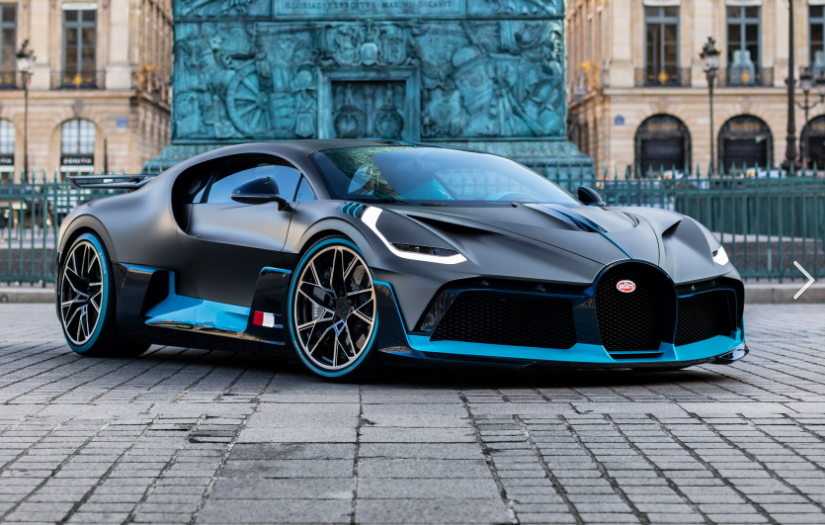

We all know the elemental facts about hypercar maker Bugatti. It doesn’t sell anything for less than two commas. It’s built one of the only cars to ever officially bre
ak the 300 mph barrier—although it was a slightly modified, “near-production” Chiron that achieved that feat—alo
ng with one of the most expensive new vehicles of all time, the La Voiture Noire. Its Type 57 SC Atlantic Coupe is arguably the most beautiful car ever built and, wit
h a mere three left in existence, demonstrably one of the most expensive at $40 million a piece. With the brand on the verge of a new era after merging with Croatian E
V maker Rimac in 2021, there’s no bad time to see just how much you really know about Bugatti.
Bugatti built trains during the 1930s, including one that was the world’s fastest.
The Bugatti name may be mainly associated with hypercars in 2022, but it has graced other products over the years, including airplane
motors and, more recently, pool tables. The company also spent time during the 1930s working on trains, or, as it liked to call them, autorails. T
hese vehicles may have never been used widely, but they were still impressive, setting multiple speed records between 1933 and 1936.
Why is Bugati the best?
Bugatti is considered the best car brand due to a combination of factors, including its rich legacy, unparalleled
speed and performance, exquisite design, limited production, innovation, and cutting-edge technology
